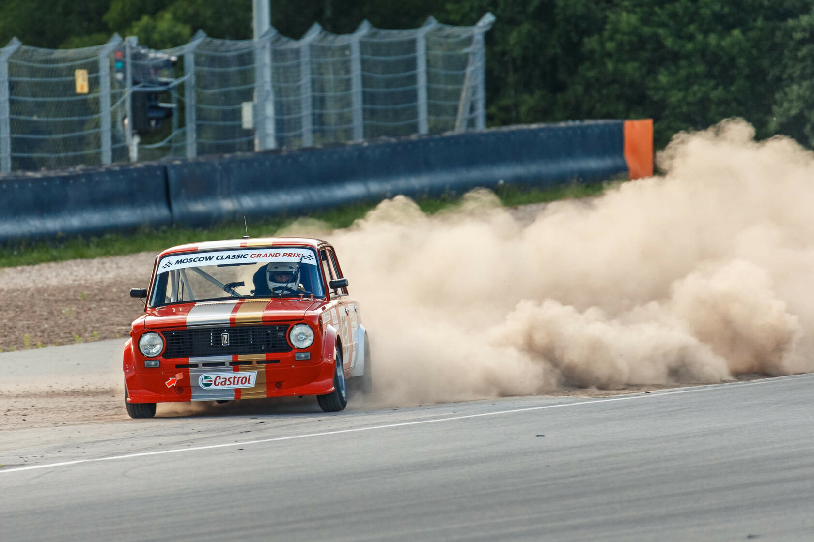

Professional engine, race & street car builder
St. Petersburg, Russia. +7 (911) 910 5825

Intro
"Race Cars Only" or RCO is a well-known Russian tuning shop/engine builder involved in all aspects of motorsport. RCO has opened doors in 2006 and since then our cars and our motors has won multiple races. We work with race teams and individual owners street legal performance cars.
RCO also provide complete service support during race events. We can deliver your race car directly to the race site and stay with you for the entire event: from the first practice till you step down from the podium.